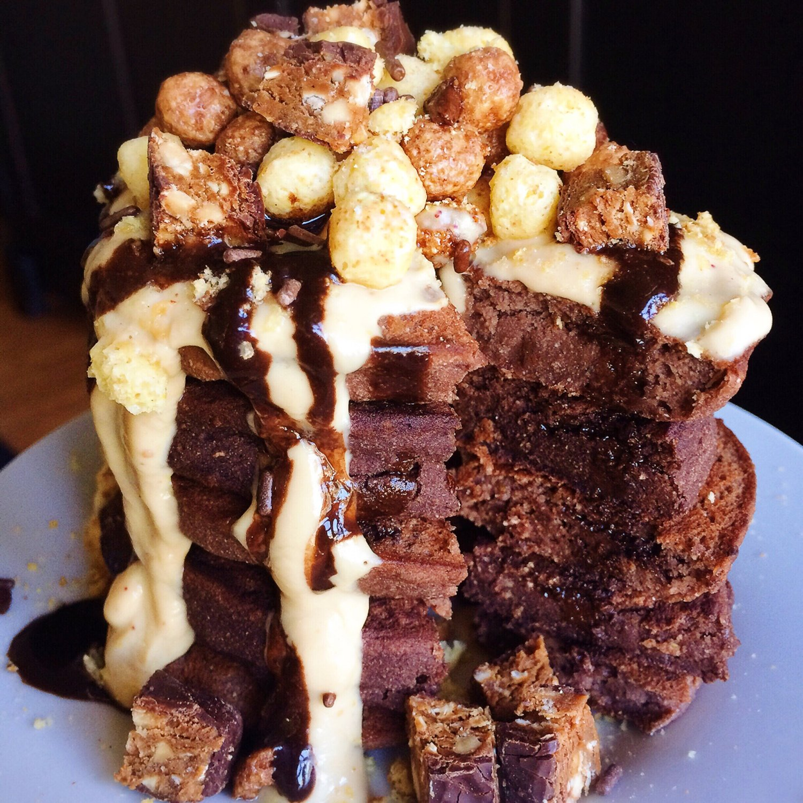
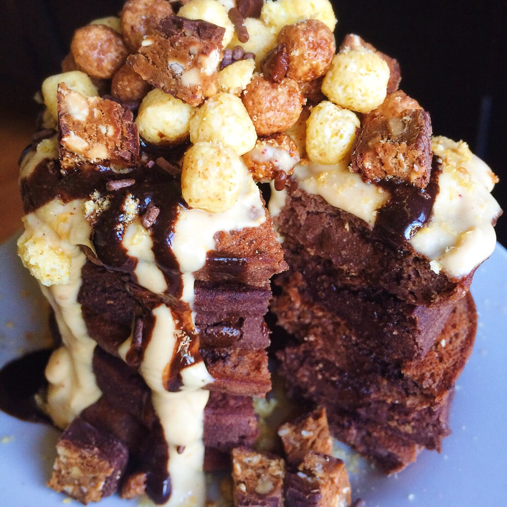

Fluffy Vegan Chocolate Pancakes (gluten free)


How about a nice, fluffy stack of vegan chocolate pancakes?! Yep, I'll take some too. These pancakes are no optical illusion; they're extremely fluffy in addition to being sugar free, gluten free, and vegan!
I don't think these could get any more delicious. Did you see the Funfetti Pancakes I posted this week? Well, since those were the best vegan pancakes I've ever experienced, I decided to try them again but with a new variation - chocolate! And wow...somehow the slight addition made them even fluffier. The picture is not trying to fool you; they really are big and thick... not just some tiny pancakes. Take a look yourself!
I'm a little addicted to these at the moment. They're so satisfying...plus going ham on toppings like I did doesn't hurt heheh. I topped mine with a peanut butter cream, chocolate stevia syrup, Leapin Lemurs cereal (it's like reeses puffs!), chocolate peanut butter Squarebar, anddd.. I think that's it? Yeah.
What do you think about these sweet vegan chocolate pancakes? I really don't know how they are gluten free, sugar free, and healthy. Don't question magic, just enjoy it.
Fluffy Vegan Chocolate Pancakes
Serves: 1
-
2 TBSP coconut flour
-
2 TBSP buckwheat flour
-
1 TBSP ground flax seeds
-
1 TBSP unsweetened cocoa powder
-
1/4 cup dairy free yogurt (Silk is my favorite brand for this)
-
1/3 cup unsweetened almond milk
-
1 tsp baking powder
-
1 stevia packet
Mix all of your ingredients and let them sit 5 minutes to thicken. If the batter is too thick after 5 minutes, add 1-2 tbsp more almond milk. Cook the batter at a low/medium heat in a pan sprayed with nonstick spray. Makes 5 pancakes!
For the peanut butter cream, mix 1/4 cup dairy free yogurt, 1 TBSP powdered peanut butter, and 1 stevia packet.